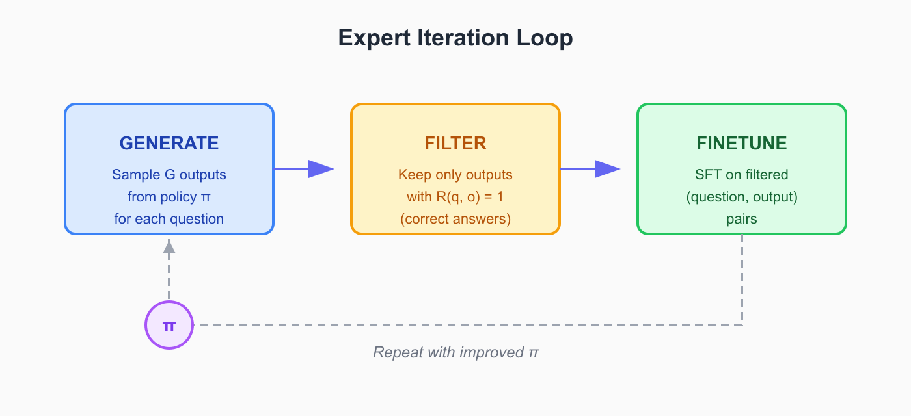
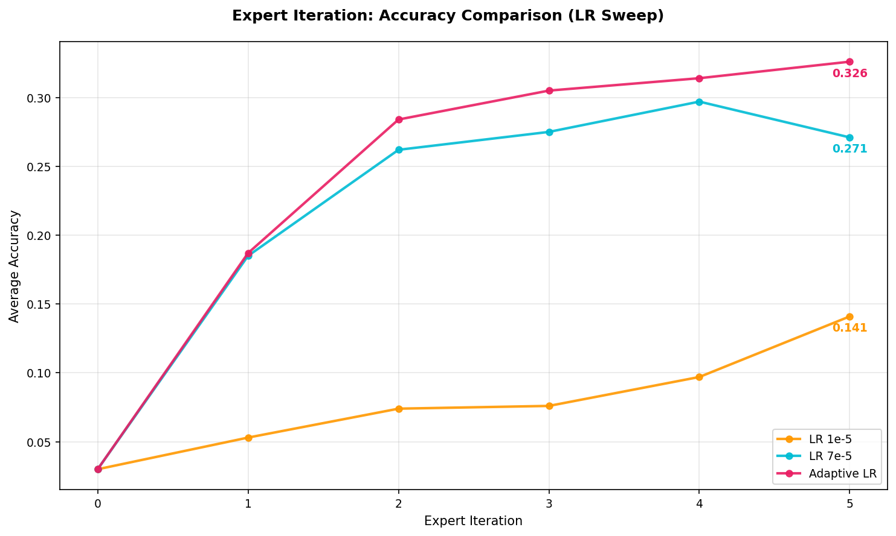
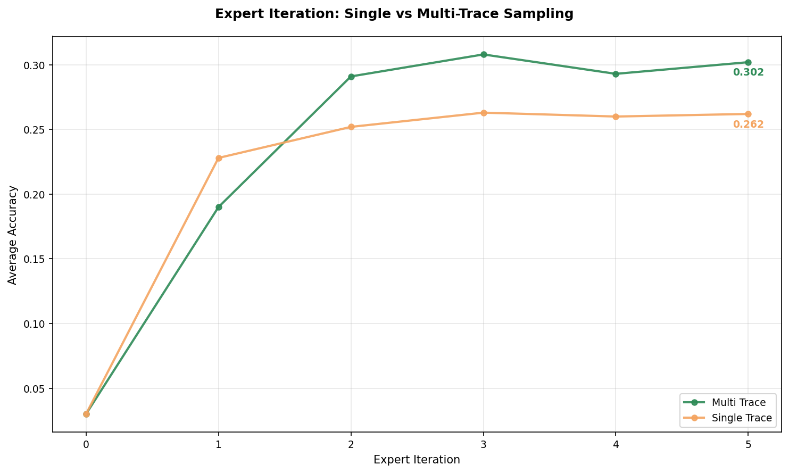
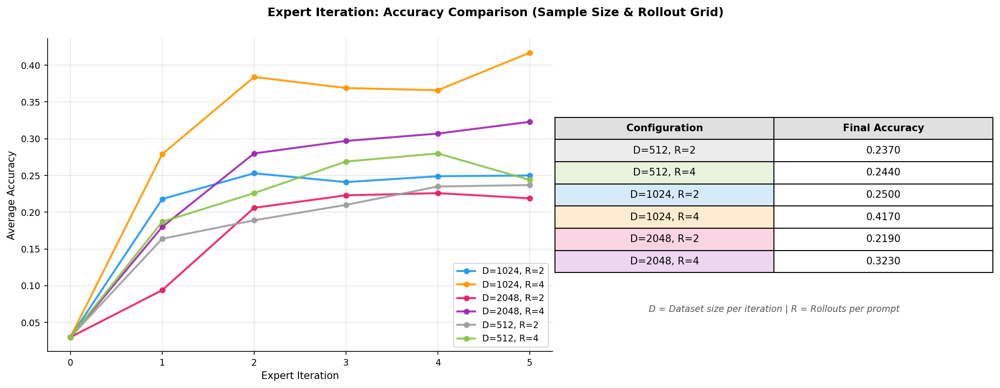
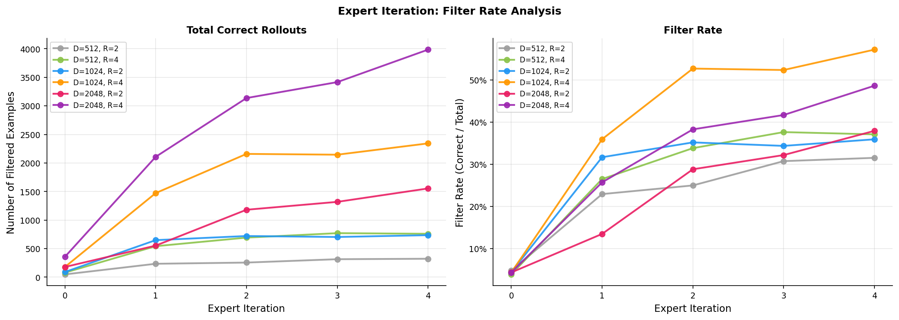
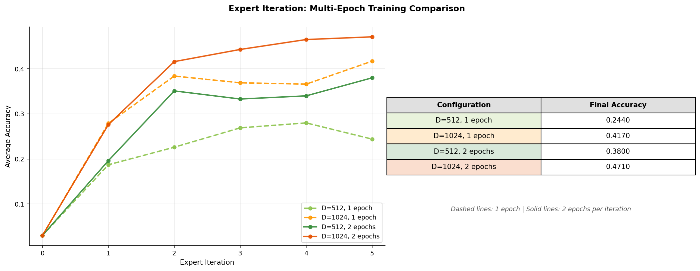

Expert Iteration for Math Reasoning
Expert Iteration, unlike SFT, does not require human-annotated reasoning traces. Instead, the model generates candidate solutions, filters for correct ones and trains on its own successful attempts. Thus, bypassing the need for external high-quality expensive annotations.
This post discusses my experiments with Expert Iteration for math reasoning as part of CS336 Assignment 5. This post continues from my previous SFT experiments. I will share what makes it work (and what does not), explore hyperparameter choices and compare the performance against SFT.
What is Expert Iteration?
Expert Iteration was first introduced by Anthony et. al. (2017) in the context of game-playing AI. The core idea is to alternate between using a slow but powerful expert to find high-quality solutions and training a fast apprentice to imitate those solutions. As the apprentice improves, it provides a better starting point for the expert. Thus, creating a virtuous cycle of improvement.
The Self-taught Reasoner (STaR) uses Expert Iteration idea for improving reasoning capabilities. It works as follows: at each iteration, we prompt the model to generate rationales for many problems, filter to keep only those that lead to correct answers, finetune on the filtered set and repeat.
Here, the filtering step acts as the “expert”. It identifies which of the model own generations are correct. The model then learns to imitate its own best behaviors.
I see Expert Iteration for LLMs as SFT on self-generated, filtered data, repeated iteratively as shown in this loop:

Note: STaR paper retrains from the base pretrained model at each iteration to avoid overfitting and introduces rationalization for failed problems. The approach used here (following the CS336 assignment) does not uses rationalization and continues training from the previous iteration checkpoint.
A key advantage of expert iteration in comparison to SFT is we do not need human or other LLMs generated reasoning traces. The model generates its own reasoning trace and correctness filtering ensures quality. This makes Expert Iteration particularly attractive for domains with verifiable rewards like math or code.
Connection to Reinforcement Learning
You can also understand expert iteration as an approximation to policy gradient RL. To see this, consider the REINFORCE objective with a binary reward \(r \in \{0, 1\}\):
\[ \nabla J(\theta) = \mathbb{E}_{o \sim \pi_\theta}[r \cdot \nabla \log \pi_\theta(o|q)] \]
When we filter for correct outputs (where \(r = 1\)) we are essntially zeroing out the gradient contribution from incorrect samples. The remaining gradient update:
\[ \nabla J(\theta) \approx \mathbb{E}_{o \sim \pi_\theta, r=1}[\nabla \log \pi_\theta(o|q)] \]
is exactly what SFT on filtered data computes.
Experimental Setup
I use the same model and evaluation setup as my previous SFT experiments. Looking at the Expert Iteration diagram above, you can see how straightforward it is to extend an SFT to Expert Iteration codebase. You basically just wrap the training loop with generation and filtering steps with other minor changes.
Model and Dataset
- Model: Qwen2.5-Math-1.5B (base, not instruction-tuned)
- Training data: ~3.5K problems from the MATH (same data as in SFT experiments)
- Validation data: 5K problems from CS336 Assignment 5 for evaluation
This is the same dataset I used in the SFT experiments. However, unlike SFT where I trained on GPT-generated reasoning traces, Expert Iteration only needs the problems and their ground-truth answers. The model generates candidate reasoning traces on the fly.
Key Hyperparameters
The Expert Iteration loop has three main key params:
| Parameter | Symbol | Description |
|---|---|---|
batch_per_ei |
\(D\) | number of questions sampled per iteration |
num_rollouts |
\(R\) | number of outputs generated per question |
num_ei |
\(G\) | number of expert iteration steps (fixed at 5) |
Each iteration samples \(D\) questions, generates \(R\) candidate solutions per question (giving \(D \times R\) total rollouts), filters for correct answers and finetunes on the filtered set.
I also use an adaptive learning rate and batch size scheme that scales based on the number of filtered examples per iteration. However, more on that in the next section. You can find the full hyperparameters configuration details in the train_exp_iter.py script.
Tuning the Training Setup
Finding the Right Learning Rate
Expert Iteration training approach differs from standard SFT because the number of filtered examples varies significantly across iterations with early iterations filtering fewer correct solutions since the model hasn’t improved yet. This makes learning rate selection important.
My initial experiments with a constant 7e-5 showed overfitting with val. accuracy plateauing and then declining. Using a lr=1e-5 avoided overfitting but resulted in extremely slow learning.

Note: All accuracy values reported in the current and following sections is on the validation data.
The solution was an adaptive scheme that scales both learning rate and batch size based on filtered data size:
| Filtered Examples | Batch Size | Learning Rate |
|---|---|---|
| < 24 | 8 | 3.5e-5 |
| 24–128 | 32 | 5e-5 |
| > 128 | 64 | 7e-5 |
When we have A few filtered examples, we use smaller batch size and lower learning rate to avoid overfitting. As more rollouts pass the filter, we can train more aggressively. This setup achieved the best val. accuracy of 32.6% after 5 iters.
As filtered dataset size varies across iterations, adaptive learning rate and batch size prevents overfitting when data is scarce while enabling efficient training when data is abundant.
Single vs. Multiple Reasoning Traces per Question
When generating \(R\) rollouts per question, multiple rollouts can produce correct answers for the same question often with different reasoning paths. This leads to the following question: should we keep just one correct trace per question in every iteration or all of them?
I ran two experiments:
- Single-trace: Keep only 1 correct trace per question (randomly selected if multiple are correct)
- Multi-trace: Keep all correct traces per question

Multi-trace sampling reaches higher accuracy compared to single-trace. Interestingly, single-trace starts faster but plateaus early while multi-trace continues improving. My understanding is diverse reasoning paths to the same answer provide a richer training signal.
Keeping all correct traces per question rather than just one provides diverse reasoning examples for improved training signal.
Exploring D (Sample Size) and R (Rollouts)
The assignment suggests to vary the batch size \(D\) and rollout count \(R\) to understand what configurations work best. I ran a grid of experiments to find the best configuration and see if I could make some sense of the results:
- \(D\) (batch_per_ei): \({512, 1024, 2048}\)
- \(R\) (num_rollouts): \({2, 4}\)

Looking at the results, some observations stand out:
The best configuration is \(D=1024, R=4\) achieving 41.7% accuracy.
Increasing \(D\) does not always guarantee better performance, both \(D=2048\) configurations underperform their \(D=1024\) counterparts.
Beyond a certain batch size, sampling more questions with limited rollouts means pulling in harder problems without correct solutions (contributing nothing to training) and a filtered dataset skewed toward easy problems the model can already solve. This results in less diversity per question and degrade performance.
- Increasing \(R\) from 2 to 4 improves accuracy across all values of \(D\), hinting that rollouts matter more than batch size.
More rollouts means higher probability of solving each question, more diverse reasoning traces when you do solve (which we saw helps in the multi-trace experiment) and better coverage of harder problems that rarely get solved with fewer attempts.
This aligns with an observation from the STaR paper where the performance stalled when the model received no direct training signal for problems it failed to solve. The large rollouts helped with training signal from each sampled question.
Filter Rate Analysis
To better understand the above accuracy results, I also tracked the filter rate (correct rollouts / total rollouts) across iterations for different experiments.

A few things stand out:
The filter rate increase across iterations as the model improves, generating more correct solutions. This in turn provides more training signal and improves the model. This is the core mechanism behind Expert Iteration.
The filter rate correlates with final accuracy better than absolute example count. \(D=2048, R=4\) produces the most correct examples (~4000) but \(D=1024, R=4\) achieves the highest filter rate (~57%) and best accuracy. Basically, more data is not always better. You need better training examples than more examples.
This filter rate reflects how well the model is improving relative to what it attempts. A high filter rate means the model is genuinely getting better at solving problems not just accumulating easy examples.
Pushing Accuracy with Multi-Epoch Training
So far, all my experiments used just 1 epoch of SFT per expert iteration step. I wanted to see if I could push accuracy even higher and the simplest way to check this is by training for more epochs per iteration. I ran additional experiments with 2 epochs per iteration for two batch sizes: \(D=512\) and \(D=1024\) (both with \(R=4\)).

Training for 2 epochs per iteration consistently outperforms 1 epoch across both configurations. My understanding is that with a large rollout count \(R\) the filtered dataset is already diverse enough that training for multiple epochs extracts more signal without memorizing. This improved learning leads to better filter rates and accuracy in subsequent iterations.
Comparison to SFT Experiments
In my previous SFT experiments, I finetuned the same Qwen2.5-Math-1.5B model using the same train and eval data, with train data being GPT-oss-120B generated reasoning traces. Below is the comparison of SFT and Expert Iteration best experiments:
| Method | Configuration | Reward Accuracy |
|---|---|---|
| Baseline | Untrained Qwen2.5-Math-1.5B | 2.9% |
| Expert Iteration (best) | D=1024, R=4, 2 epochs | 47.1% |
| SFT (best) | Filtered data, 2 epochs | 53.4% |
Despite extensive tuning across batch sizes, rollout counts and learning rate schedules Expert Iteration reached 47.1% accuracy which is around 6% below SFT’s 53.4%.
In my understanding, the gap comes down to two factors: data quality and rationalization:
- SFT trains on reasoning traces from GPT-OSS-120B, a much more capable model. These traces aren’t just correct but also demonstrate sophisticated problem-solving strategies. Expert Iteration by contrast trains on the model own correct outputs which are inherently less refined. The model can only learn from its own best behaviors.
- Moroever, the STaR paper shows that rationalization (providing the answer as a hint to generate rationales for failed problems) provides crucial training signal that accelerates learning. Without it, the model receives no direct signal for problems it cannot solve.
There are still experiments one could run to close this gap like larger rollout counts (8, 12), adaptive sampling strategies to limit correct rollouts per question and prevent overfitting etc. However, I didn’t find it compelling enough to run more experiments.
Also, I have also not come across many experiments/blogs/papers on Expert Iteration replacing SFT and given my experiments, I think there are a few reasons:
Expert Iteration requires a model that can already solve some problems correctly. A weaker base model would struggle to provide any training signal.
The method is sensitive to learning rate, batch size, and rollout count. You need to find the right balance otherwise you risk overfitting. My grid search showed final accuracy ranging from 21.9% to 47.1% depending on configuration.
Each iteration requires generating \(D \times R\) rollouts before any training happens. With \(D=1024\) and \(R=4\), that is 4,096 generations per iteration. You end up spending as much or more compute on generation as on training.
Despite all the above, Expert Iteration has one compelling advantage: it does not require expensive annotated data and is well-suited for domains with verifiable rewards like math and code.
It is also worth noting that the core mechanism in expert iterations, generating many outputs and filtering for correct ones is linked to rejection sampling mentioned and used in DeepSeek-Math and DeepSeek-R1 papers. You can think of Expert Iteration as rejection sampling applied iteratively: sample, filter, finetune, repeat.
Resources
Papers and blogposts
- Thinking Fast and Slow with Deep Learning and Tree Search: Original Expert Iteration paper
- STaR: Bootstrapping Reasoning With Reasoning: Expert Iteration for LLM reasoning
- CS336 Assignment 5: Stanford CS336 alignment assignment
- Building SFT from Ground Up: Previous SFT experiments blogpost
Code
- Expert Iteration Implementation: My Expert Iteration codebase
- Training and validation datasets: Training and validation datasets used in the experiments
- wandb Training logs
- Finetuned checkpoints